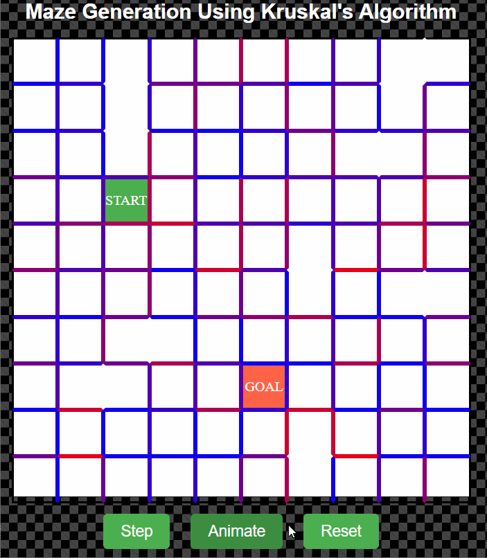
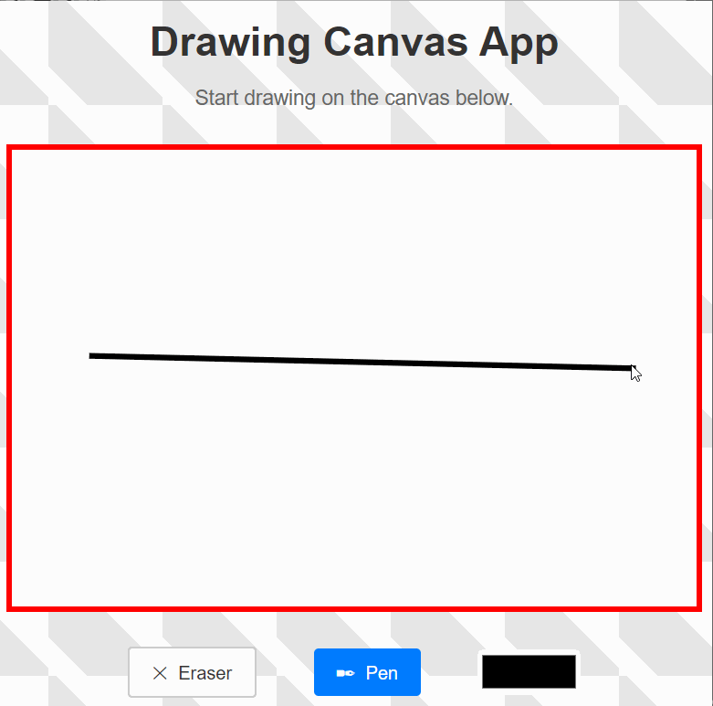
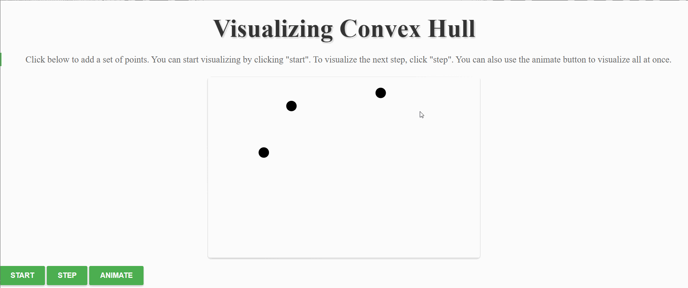
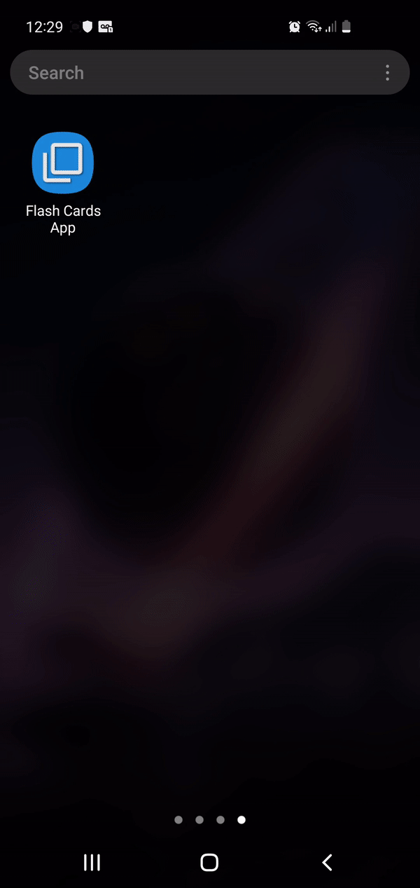
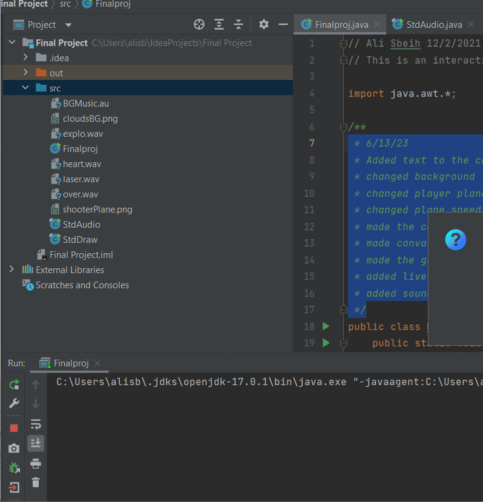
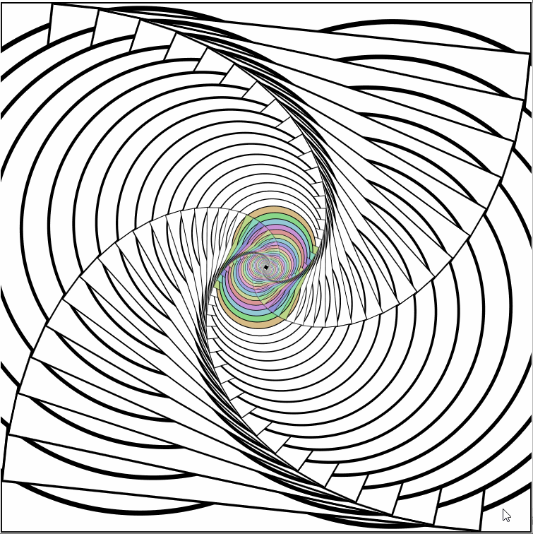
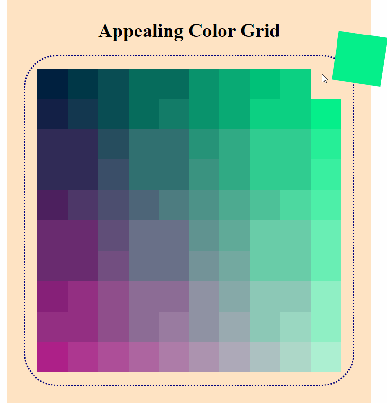
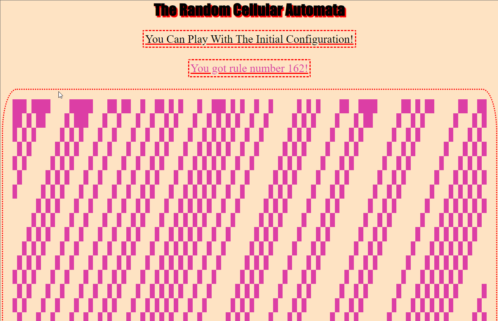

ABOUT
COURSES
PROJECTS
RESUME

Maze Generator
This is an interactive demonstration of maze generation using a really cool application of Kruskal's algorithm.

Drawing Canvas
A drawing canvas that allows the user to draw using straight lines, erase, and switch colors

Convex Hull Animation
An animation of the computation of a convex hull enclosing a set of points entered by the user.
Dots-and-Lines
A web program that allows users to create a graph and perform two search algorithms
Cellular-Automaton
A web program that generates a collection of cells according to a set of states and rules
Wishlist App
A wishlist app that helps the user keep track of what they want to buy built with Kotlin.

Flash-Cards-App
A flash cards app built with Java

Final-Project-Intro-COSC App
An interactive shooter game.

Recursive Squares
Squares and circles drawn recursively and resized and tilted to create an interesting visual effect with added colors
Convex-Hull
A web program that finds the convex hull

Color Grid
Visually appealing color grid.

Random Cellular Automata
Generates Random Cellular Automata
Segment-Intersections
A web program that detects and highlights segment intersections.
RGB-Color-Picker
A web program that allows users to change the color of a block